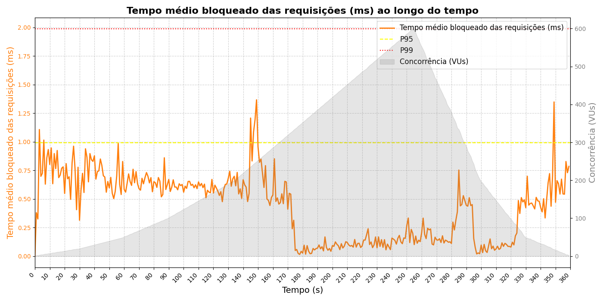

Relatório Resumo do Teste k6 (Monitoria)
Como usar
Execute o script Python plot_k6.py para gerar gráficos e imprimir estatísticas no terminal.
Os gráficos gerados automaticamente são exibidos abaixo.
Arquivo CSV Original
Imagens Geradas
Duração média das requisições
Tempo bloqueado das requisições
Vazão de requisições por segundo
Resumo no Terminal
# Exemplo de saída do script:
Resumo da métrica 'http_req_duration':
Média: 105.62 ms
Mediana: 105.47 ms
Min: 101.93 ms
Máx: 118.12 ms
P95: 108.36 ms
P99: 110.93 ms
Resumo da métrica 'http_req_blocked':
Média: 0.54 ms
Mediana: 0.54 ms
Min: 0.00 ms
Máx: 4.62 ms
P95: 0.99 ms
P99: 1.11 ms
Resumo da métrica 'http_reqs':
Média: 1.00 reqs
Mediana: 1.00 reqs
Min: 1.00 reqs
Máx: 1.00 reqs
P95: 1.00 reqs
P99: 1.00 reqs